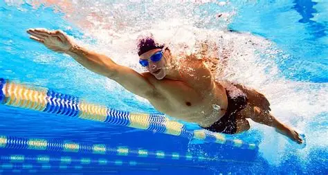

Acerca de mí
Nombre completo: Ruben Garay Medina
Grado y Semestre: Bachillerato / 6° Semestre
Institución: CEMSaD Durango
Me gusta: me gusta comer tacos ,las hamburguesas y pizza , me gusta escuchar musica de preferencio pop-rock, me gusta jugar videojuegos en mi telefono, me gustar ver luchas de UFC, me gusta venir a la escuela para convivir con mis compañeros, me gusta el dinero .
Deportes más populares

Fútbol
Conocido como el deporte rey, es la disciplina con mayor cantidad de seguidores en todo el planeta, presente en casi todos los países. No solo es un juego, sino un fenómeno social que une culturas, genera emociones y enseña valores como el respeto, la disciplina y el trabajo en equipo.
Seguidores estimados: Más de 3.500 millones
Reglas básicas: Dos equipos de 11 jugadores. Solo el portero puede tocar el balón con las manos dentro de su área. El objetivo es introducir el balón en la portería contraria. El partido dura 90 minutos divididos en dos tiempos de 45 minutos.
Competición principal: Copa Mundial de la FIFA

Críquet
Muy popular en el sur de Asia, Reino Unido, Australia y el Caribe. Es un deporte de gran estrategia y resistencia, donde la paciencia y la técnica son más importantes que la velocidad pura. Para millones de personas es mucho más que un juego: es parte de su identidad cultural.
Seguidores estimados: Más de 2.500 millones
Reglas básicas: Dos equipos de 11 jugadores. Un equipo intenta anotar carreras golpeando la pelota, mientras el otro lanza y defiende. La duración varía desde unas pocas horas hasta 5 días en partidos tradicionales.
Competición principal: Copa Mundial de Críquet

Baloncesto
Deporte dinámico, rápido y emocionante, creado para practicarse en espacios cerrados durante el invierno. Hoy es uno de los deportes con mayor crecimiento mundial, muy seguido por jóvenes y con una gran presencia en redes sociales y medios de comunicación.
Seguidores estimados: Más de 2.200 millones
Reglas básicas: Dos equipos de 5 jugadores. El objetivo es lanzar el balón a través del aro contrario para sumar puntos. Se avanza botando el balón. El partido dura 40 o 48 minutos según la competición.
Competición principal: NBA y Torneos Olímpicos

Béisbol
Deporte de gran tradición en América del Norte, el Caribe y Asia. Combina fuerza, concentración y estrategia. Es muy popular en México, donde cuenta con ligas profesionales y seguidores muy fieles que lo consideran parte de su cultura.
Seguidores estimados: Más de 500 millones
Reglas básicas: Dos equipos de 9 jugadores. Un equipo lanza y defiende, mientras el otro batea. El objetivo es recorrer las cuatro bases para anotar carreras. El partido consta de 9 entradas completas.
Competición principal: Serie Mundial y Clásico Mundial

Hockey sobre césped
Uno de los deportes más antiguos que aún se practican. Es muy rápido, requiere gran coordinación y resistencia física. Destaca por ser uno de los deportes donde las mujeres han logrado una igualdad de competición muy destacada a nivel mundial.
Seguidores estimados: Más de 2.000 millones
Reglas básicas: Dos equipos de 11 jugadores. Se usa un palo especial para golpear la pelota y anotar en la portería contraria. El partido dura 70 minutos divididos en dos tiempos.
Competición principal: Copa Mundial de Hockey

Tenis
Deporte elegante y muy completo, que se puede practicar en cualquier edad. Se juega en diferentes superficies: arcilla, césped o pista dura, lo que cambia la dinámica del juego. Es uno de los deportes con mayor cobertura mediática y premios económicos del mundo.
Seguidores estimados: Más de 1.500 millones
Reglas básicas: Se puede jugar individual o por parejas. El objetivo es golpear la pelota para que toque el suelo en el campo contrario sin que el rival la devuelva. Se disputa por puntos, juegos y sets.
Competición principal: Torneos de Grand Slam

Voleibol
Deporte accesible, dinámico y muy practicado en escuelas, parques y playas. Es ideal para aprender a trabajar en equipo, ya que ningún jugador puede ganar solo. También tiene su versión en la arena, que es muy popular en competiciones internacionales.
Seguidores estimados: Más de 900 millones
Reglas básicas: Dos equipos de 6 jugadores. El balón se pasa por encima de una red sin que toque el suelo; cada equipo puede dar hasta tres toques antes de enviarlo al campo contrario. Se juega por sets.
Competición principal: Campeonato Mundial de Voleibol

Natación
Considerado el deporte más completo que existe, ya que trabaja todos los músculos del cuerpo sin dañar las articulaciones. Mejora la respiración, la resistencia y la salud cardiovascular. Se practica tanto por diversión como a nivel competitivo desde edades muy tempranas.
Seguidores estimados: Más de 400 millones
Reglas básicas: Se compite en diferentes estilos: libre, espalda, pecho y mariposa. El objetivo es recorrer la distancia establecida en el menor tiempo posible. Es deporte olímpico desde sus primeras ediciones.
Competición principal: Campeonatos Mundiales y Juegos Olímpicos
Referencias Bibliográficas
- Federación Internacional de Fútbol Asociación (FIFA). (2025). Historia y reglamento del fútbol. Recuperado de https://www.fifa.com
- Comité Olímpico Internacional (COI). (2024). Los deportes en los Juegos Olímpicos. Recuperado de https://olympics.com/es/deportes
- Enciclopedia Británica. (2025). Deportes más populares del mundo. Recuperado de https://www.britannica.com/sports
- Organización de las Naciones Unidas para la Educación, la Ciencia y la Cultura (UNESCO). (2023). El deporte como herramienta de desarrollo social. Recuperado de https://es.unesco.org
- Consejo Mundial del Deporte. (2024). Estadísticas de participación deportiva mundial. Recuperado de https://www.worldsport.org